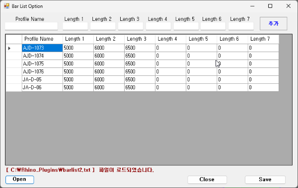

UserBarlist UBarlist
A command that executes external options window (Barlist_Option.exe) to input and save bar length used by profile.
Saved bar data file is loaded in User mode of Cuttinglist command and used in cutting list calculation.
When bar specification actually owned or ordered by factory differs from AutoCAD default (3000~6500mm),
can optimize cutting by directly specifying bar length to use for each profile.
When bar data is saved with UserBarlist, can load that file by selecting
User mode when executing Cuttinglist.
| Step | Description |
|---|---|
UserBarlist | Opens Barlist_Option.exe to input bar length for each profile and saves as .txt file. |
Cuttinglist | When [User] is selected on execution, file open dialog is displayed. Selecting saved .txt generates cutting list with corresponding bar. |
UserBarlist (or UBarlist) in command line and press Enter.Barlist_Option.exe window opens..txt file.Cuttinglist later, select [User] and load the saved file.
| Item | Description |
|---|---|
| Execution Method | Without using AutoCAD API, launches external standalone program Barlist_Option.exe. |
| Input Content | Input one or more available bar lengths (mm) for each profile name. |
| Save Format | Input data is saved as text file (.txt). File format is ProfileName,Length1,Length2,... (comma-separated). |
| Linked Command | When [User] mode is selected in Cuttinglist execution, loads saved file and generates cutting list with bar matching that profile. |
| Command Alias | UBarlist performs identical operation. |
| Applicable Environment | AutoCAD / BricsCAD / Rhino (platform-independent as external EXE execution) |
Line layer name for
corresponding bar to be applied in Cuttinglist.
If profile name is not in file, default bar list (3000, 4000, 5000, 6000, 6500) is used.
Barlist_Option.exe is installed with RCW. If it has been removed, reinstall RCW.
If file does not exist, command exits without error but window does not open.